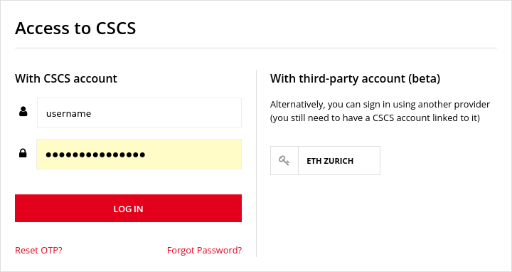
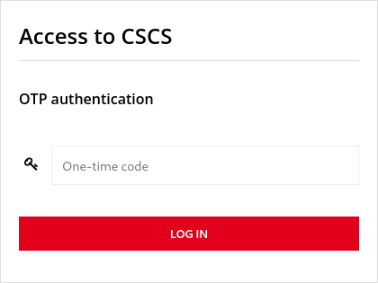

Multi Factor Authentification¶
Todo
These docs have been mostly cut and paste, with some small changes.
I did some refactoring to make them a bit easier to read, and more logical for linking to other docs.
But they should be more user friendly, because they will often be the first docs that users interact with as they acccess CSCS.
To access CSCS services and systems users are required to authenticate using multi-factor authentication (MFA). MFA is implemented as a two-factor authentication, where one factor is the login and password pair ("the thing you know") and the other factor is the device which generates one-time passwords (OTPs, "the thing you have"). In this way security is significantly improved compared to single-factor (password only) authentication.
The MFA workflow uses a time-based one-time password (OTP) to verify identity. An OTP is a six-digit number which changes every 30 seconds. OTPs are generated using a tool installed on a device other than the one used to access CSCS services and infrastructure. We recommend to use a smartphone with an application such as Google Authenticator to obtain the OTPs.
-
Get the authenticator app set up on your phone.
-
Use SSH to log into a cluster.
-
MFA is required to log into CSCS web services.
Getting Started¶
When you first log in to any of the CSCS web applications such as UMP, Jupyter, etc., you will be asked to register your device.
Firstly, you will be asked to provide a code that you received by email. After this validation step, you will need to scan a QR code with your mobile phone using an application such as Google Authenticator. Lastly, you will need to enter the OTP from the authenticator application to complete the registration of your device. From then on, two-factor authrentication will be required to access CSCS services and systems. A more detailed explanation of the registration process is provided in the next section.
Warning
It is not possible to log in to CSCS systems using SSH without registering a device and creating certified SSH keys. See below for details on generating certified SSH keys.
Authenticator Application¶
CSCS supports authenticators that follow an open standard called TOTP. The recommended way to access such an authenticator is to install an application on your mobile phone. Google Authenticator and FreeOTP have been tested successfully; however, if you are using a different mobile application for OTPs, feel free to continue using it - given it supports the TOTP standard.
You can download Google Authenticator for your phone:
- Android: on the Google Play Store.
- iOS: on the Apple Store.
Configure the Authenticator¶
Before starting, ensure that the following pre-requisites are satisfied
- You have an invitation email from CSCS for MFA enrollment
- a notification email will be sent atleast one week before we sent the invitation email.
- You have installed an OTP Authenticator app on your mobile device (see above).
Note
If you try access any of our web applications without setting up MFA, you will be redirected to enroll for MFA.
Warning
If you try to SSH to CSCS systems without setting up MFA, you will be prompted with permission denied error, for example:
Steps:
- Access any of the CSCS Web applications such as
account.cscs.ch, Jupyter, etc., on a new browser session which will redirects you to the CSCS login page. - Log in with your username and password.
- You will be asked to key in a code which CSCS Authentication system sent to you by email. After successfaul validation of the code you will be redirected to the next page which present a QR code.
- Scan the QR code with the authenticator app that was installed on your mobile device. After scanning the QR code the authenticator app will start generating a new 6 digit OTP every 60 seconds.
- To complete the OTP registration process, please enter the 6 digit OTP from the authenticator app at the bottom of the the same QR code page. Optionally, you can input your device name where you imported the OTP seed by scanning the QR code
- On successful registration you will be logged into the CSCS web application that you accessed in step-1
Todo
do we need the images from KB?
Resetting the Authenticator¶
In case users lose access to their mobile device/Authenticator OTP, users can reset their OTP by following the below self-service process.
- Access any CSCS web application like: account.cscs.ch which redirects you to the CSCS Login page.
- From the login screen, click the "Reset OTP" link below the "LOG IN" button
- Enter your username and password.
- On successful validation of user credentials, users will receive an email with a reset credentials link like the one below, click on the link in the email
- The steps are the same as for the first time you configured the authenticator.
Warning
When replacing your smartphone remember to sync the authenticator app before resetting the old smartphone. Otherwise, you will have to follow this process.
Using MFA to acccess web-based services¶
After having completed the setup of your authenticator, you will be asked to enter your login/password and the OTP to access all web-based services.
- Enter username and password.
- if the wrong username / password combination is entered, you will see an error. 
- Then you will be prompted to enter the 6-digit code obtained from your device. 
Using MFA with SSH¶
It is not possible to authenticate with a username/password and user-created SSH keys: it is necessary to use a certified SSH key created by a CSCS SSHService.
Note
Keys are valid for 24 hours, after which a new key must be generated.
Warning
The number of certified SSH keys is limited to five per day. Once you have reached this number you will not be able to generate new keys until at least one of these key expires or keys are revoked.
Step 1: generate SSH keys¶
There are two methods for generating SSH keys using the SSHService, the SSHService web app or by using a command-line script.
Getting keys via the command line¶
On Linux and MacOS, the SSH keys can be generated and automatically installed using a command-line script.
This script is provided in pure Bash and in Python.
Python 3 is required together with packages listed in requirements.txt provided with the scripts.
Note
We recommend to using a virtual environment for Python.
If this is the first time, download the ssh service from CSCS GitHub:
The next step is to use either the bash or python scripts:
For both approaches, follow the on screen instructions that require you to enter your username, password and the six-digit OTP from the authentifactor app on your phone.
The script generates the key pair (cscs-key and cscs-key-cert.pub) in your ~/.ssh path:
Getting keys via the web app¶
Access the SSHService web application by accessing the URL, sshservice.cscs.ch.
- Sign in with username, password and OTP
- Select "Signed key" on the left tab and click on "Get a signed key"
- On the next page a key pair is generated and ready to be downloaded. Download or copy/paste both keys.
Once generated, the keys need to be copied from where your browser downloaded them to your ~/.ssh path, for example:
mv /download/location/cscs-key-cert.pub ~/.ssh/cscs-key-cert.pub
mv /download/location/cscs-key ~/.ssh/cscs-key
chmod 0600 ~/.ssh/cscs-key
Step 2: log in with the generated keys¶
Set up a passphrase on the private key:
Add the key to the SSH agent:
Could not open a connection to your authentification agent
If you see this error message, the ssh agent is not running. You can start it with the following command:
Once the key has been configured, you can log in to CSCS' login system Ela:
Frequently encountered issues¶
too many authentification failures
You may have too many keys in your ssh agent. Remove the unused keys from the agent or flush them all with the following command:
Permission denied
This might indicate that they key has expired.
Could not open a connection to your authentication agent
If you see this error when adding keys to the ssh-agent, please make sure the agent is up, and if not bring up the agent using the following command:
Todo
We need a "best practices"/"hints and tips" section for setthing up ~/.ssh/config